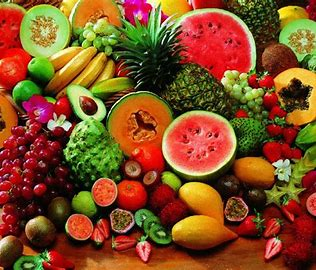

Tropical fruits
What are tropical fruits?
Tropical fruits are named after their areas of cultivation and breeding. The tropical fruits are usually grown in hot and humid regions. These regions mostly lie in the Tropic of Cancer and Tropic of Capricorn, covering the tropical and subtropical areas of Asia, Africa, Central America, South America, the Caribbean, and Oceania.
What are the benefits of tropical fruits?
-
Tropical fruits, also known as exotic fruits, are chockful of vitamins, minerals, and antioxidants. They not only boost the overall health of the
body but also protects the human body against many diseases, including cancer.
- Decrease high cholesterol levels.
- Favors digestion.
- Generates a feeling of fullness, being adequate in slimming diets.
Some examples of tropical fruits
Some examples of tropical fruits are: Banana, Mango Kiwi, Durian, Guavas, Mango, Papayas.